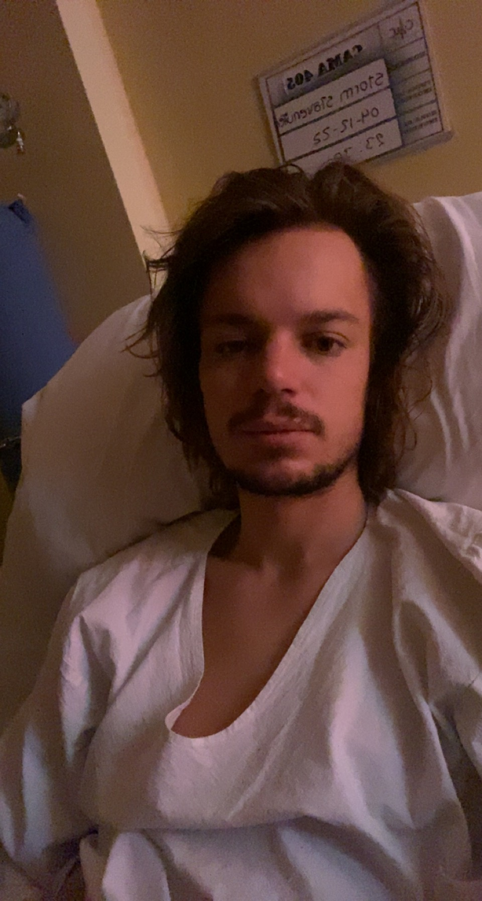
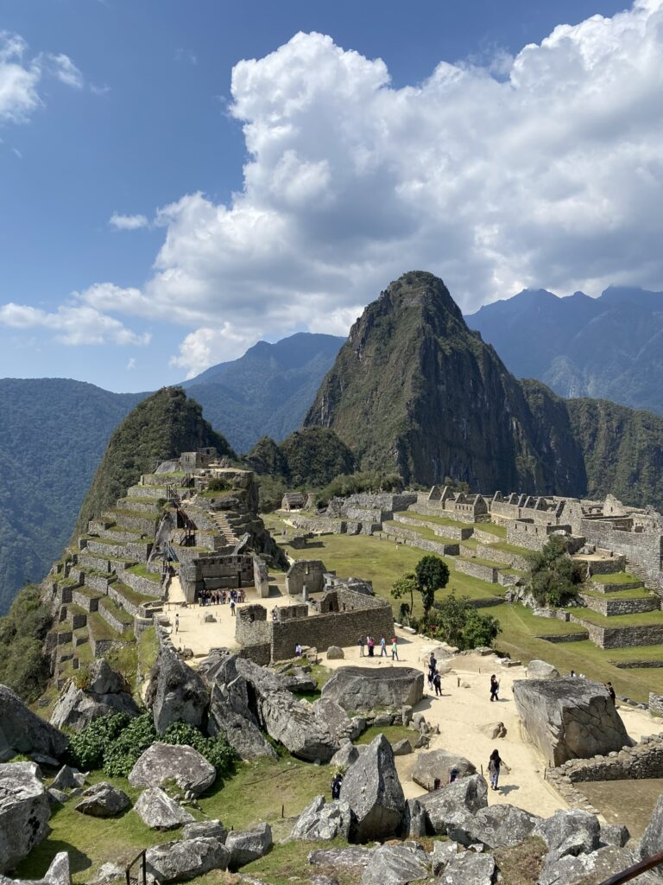
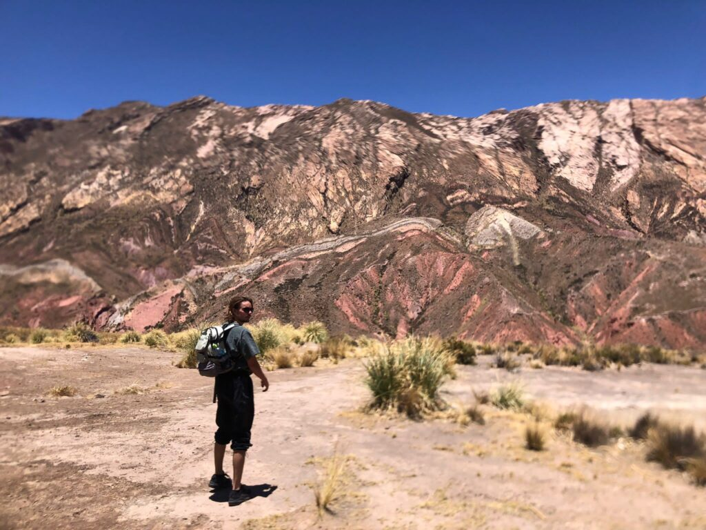

Lopen en hopen. Totdat dat niet meer gaat. Wat doe je dan? Een kijkje in een Zuid-Amerikaans hospitaal.
‘Hola Stooom.’ De zuster, gekleed in een turquoise hemd en hoedje, witte broek en mondkapje, stapt naar binnen met haar gebruikelijke apparatuur. Tijd om hartslag en temperatuur op te meten, een handeling die consequent om de paar uur gebeurt. Vaak met een meelevende reactie erbij, afhangend van de warmte die mijn lichaam uitstoot. Of met glimmende ogen: ‘Treintaiseis, good!‘ Danwel dieptreurig: ‘Ohh noo, treintaiocho.’ In dat geval spuit ze een substantie in een zak water die langzaam mijn bloedbaan indruppelt. Weer een toevoeging na twee soorten antibiotica en allerlei remedies die mijn gevelde corpus moeten assisteren. Mag ik dan nu slapen? Ja, tot over een paar uur.

Een kleine week eerder. Ik ben nog in de wetenschap dat hoogte een rol speelt in mijn verslechterende toestand. Dus verzamel ik mijn laatste energie om naar het lager gelegen Machu Picchu te reizen. Ik verwacht een rustige treinroute door een ontketende bergketen, maar de reis blijkt gestoeld op het brengen van een heuze Inca-experience. In thema geklede enthousiastelingen begeleiden alle reizigers al dansend naar de coupés. Even later is het gangpad hun podium voor een liefdesduet, terwijl de trein parrarel aan een rotsige rivier steeds verder opgeslokt raakt tussen de bergwanden en de groene bebossing steeds tropischer wordt.
Na een korte nacht in het aangelegen dorpje is het tijd om een van de zeven wereldwonderen te aanschouwen. Langzaam verplaats ik me door de bergketen tot daar opeens ligt wat je verwacht, maar toch een mini-hartstilstand oplevert. Omgeven door drie afgronden, die weer oplopen richting inponerende bergen, schittert in de zon het eeuwenoude dorpje, wat ook een verblijf voor de Inca-elite of een heilige locatie kan zijn geweest. Na een lang bovenaanzicht drentel ik langs de resten van huisjes, die zich kenmerken met een architectuur van op elkaar geslepen stenen. De Spanjaarden verdreven 500 jaar geleden de inwoners, zonder het dorp zelf te ontdekken. De Europese ziektes deden het voor hen.

Na twee weken zwoegen, zweten en onrustig slapen, is het tijd om toe te geven aan meer hulp. Een uitgebreid onderzoek door een Engels sprekende dokter toont aan dat ik een parasiet heb en bovenal een salmonella-infectie in de bloedbaan. Met een mix van pillen strompel ik nog een paar dagen verder, totdat mijn lichaam opgeeft en ik opeens in een ziekenhuis lig met een infuus aan mijn arm.
Terwijl de behandeling doorgaat, houden de verpleegsters me dag en nacht in de gaten, met alle testen van dien. Ik geef me over aan het modieuze nachthemd, de smakeloze soepjes, de oneindigheid van naalden en de net niet warme douche. Elke ochtend komt de opgewekte dokter Rodolfo binnen met het nieuws dat het de goede kant op gaat. Elke avond schoffelt een andere dokter die prognose met een serieus gezicht onderuit, vaak omdat de koorts dan terug is. Na een paar dagen is mijn soepele bloedbaan weer zo schoon als Nederlands kraanwater, maar de klachten blijven. De radeloze artsen trekken me door machines, maken foto’s en echo’s en eisen meer bloed, poep en plas als vampieren. Mijn krachtige hoop krijgt toch langzaam butsen en de hunkering naar gezondheid is gigantisch, op de voet gevolgd door sushi.

WK Voetbal dan. Niet mijn focus, maar toch zijn de resultaten van primair belang, want Nederland - Argentinië nadert in de kwartfinale van het WK en als Lionel Messi geen wereldkampioen wordt, dompelt dit continent zich in diepe rouw.
Aan de overkant van de gang ligt een eveneens door salmonella gevelde, verdrietige landgenote van mijn leeftijd. Ze krijgt de zusters zover een flatscreen met speciale antenne te installeren. Vanuit haar bed, handjes boven de dekens, kijken we in belabberde staat naar een sensationele pot. De koorts wordt verdreven door een na acht jaar terugkerend, zinderend WK-gevoel. Na de 2-2 denk ik aan dansen. Na het laatste fluitsignaal alleen maar aan slapen.
‘Hola Stooom, vamos!’ Het is tijd om weg te gaan uit het oord waar het me niet is gelukt om iemand wat verse producten voor me te laten kopen. Waar ik talloze keren per dag met een infuuspaal naast me, tollend op mijn benen, stond te plassen. Waar moeizame gesprekken in het Spaans tot vooral onduidelijkheid leidde. Een gebouw waar iedereen zo snel mogelijk weg wil, maar ook de plek waar ik eindelijk voor mezelf liet zorgen en waar mensen oprecht om me gaven. En waar ik op een beeldscherm liefde ontving van alle lieve, geschrokken mensen in mijn leven.
Weer terug in een hostel wacht ik op de laatste uitslagen, na een avontuur dat even niet op de planning stond.